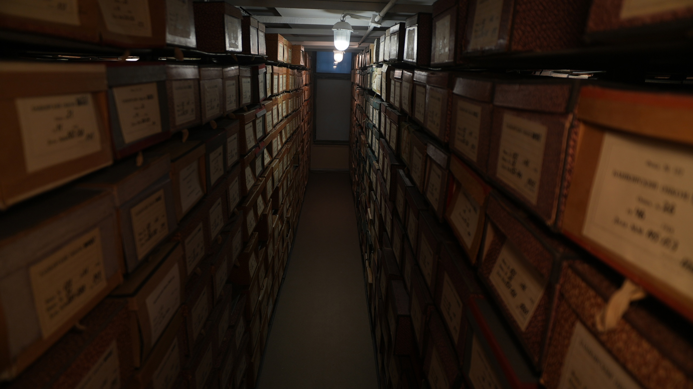
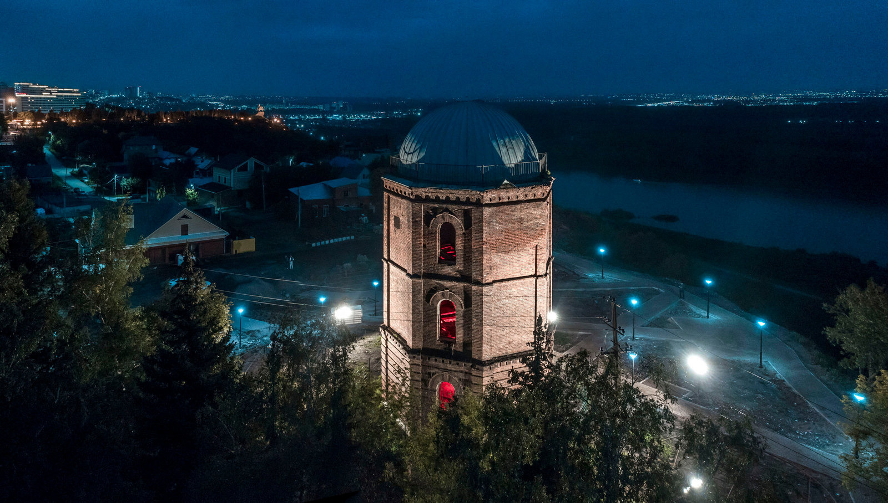

Места силы

Музей археологии и этнографии
Прикоснись к древности и открой секреты

Лимонарий
Тропический рай в городе

Муралы
Молодежная культура через уличное искусство

Клещ Валера
Все путешественники знают о нем

Архив Республики
Загляни в прошлое Уфы и открой важные ответы

Водонапорная башня
Старинная архитектура встречается с духом уфимских легенд!